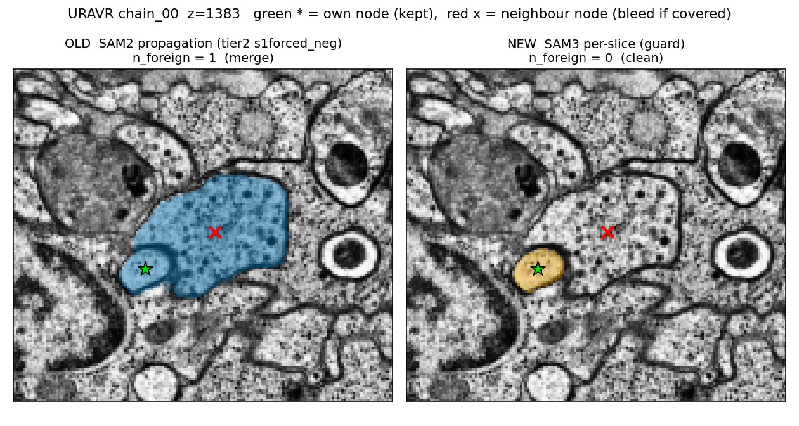
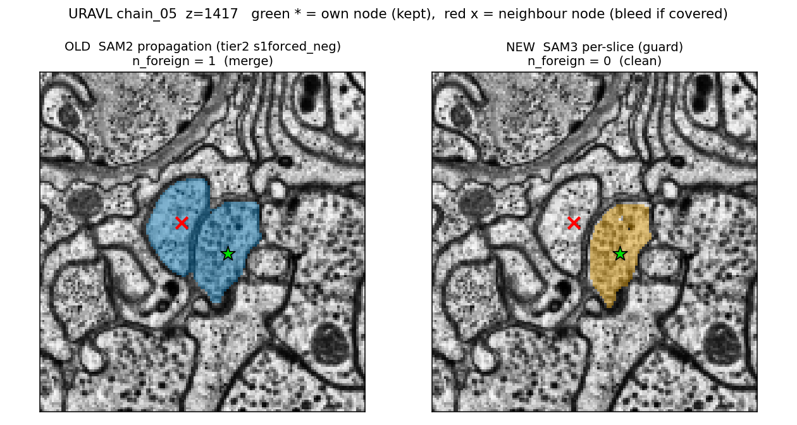
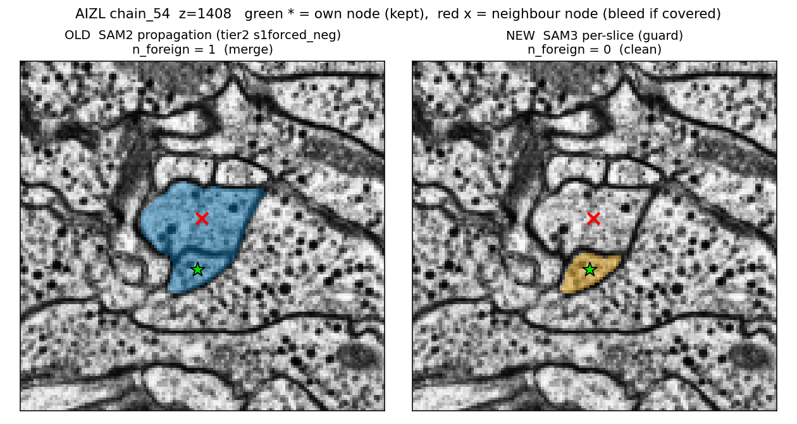
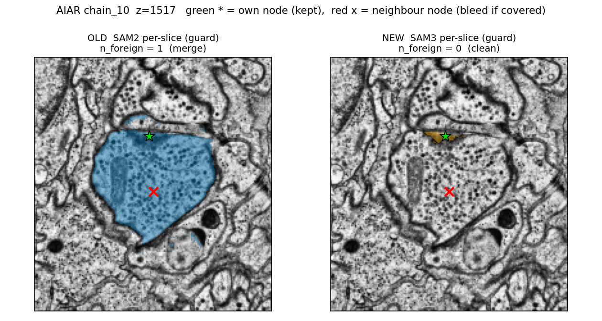
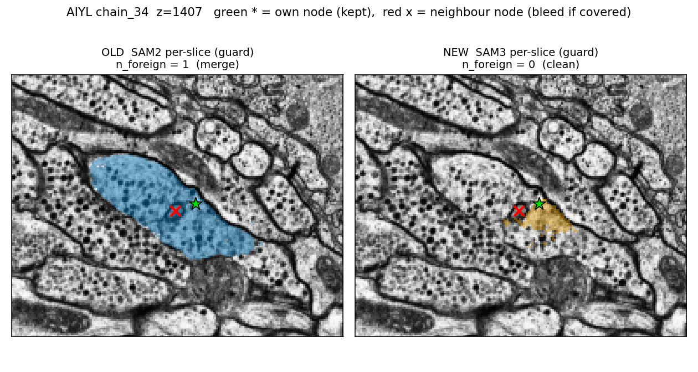
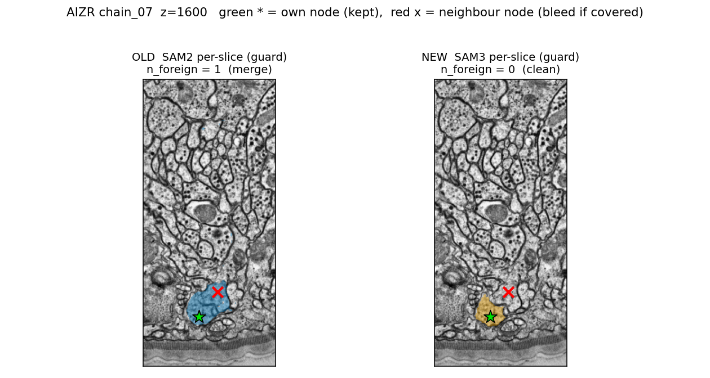

Left = OLD config (blue mask), right = NEW SAM3 per-slice (orange mask), same EM crop and same nodes. green star = the chain's own skeleton node (kept in both); red x = a neighbour neuron's node that the OLD mask swallowed (a merge the metric counts) and the NEW mask leaves alone. Rendered from saved masks, no model runs.
OLD n_foreign = 1 -> NEW n_foreign = 0; foreign node 19.7 px inside old mask, 33.5 px from own node; clarity: clear

OLD n_foreign = 1 -> NEW n_foreign = 0; foreign node 12.6 px inside old mask, 23.5 px from own node; clarity: clear

OLD n_foreign = 1 -> NEW n_foreign = 0; foreign node 12.0 px inside old mask, 19.1 px from own node; clarity: moderate

OLD n_foreign = 1 -> NEW n_foreign = 0; foreign node 29.4 px inside old mask, 43.4 px from own node; clarity: moderate

OLD n_foreign = 1 -> NEW n_foreign = 0; foreign node 14.8 px inside old mask, 12.0 px from own node; clarity: moderate

OLD n_foreign = 1 -> NEW n_foreign = 0; foreign node 10.0 px inside old mask, 34.0 px from own node; clarity: clear
